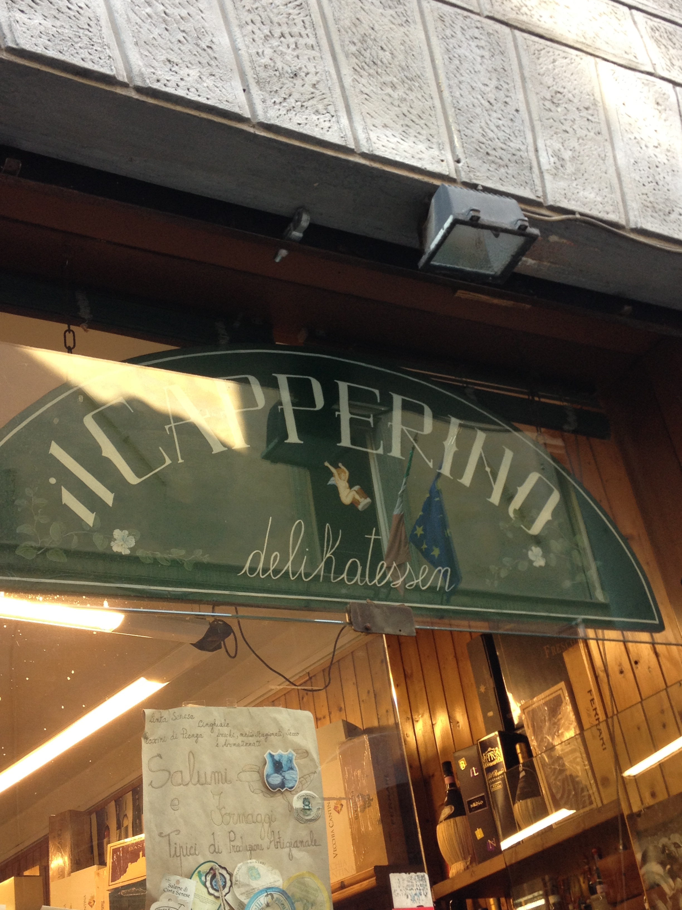
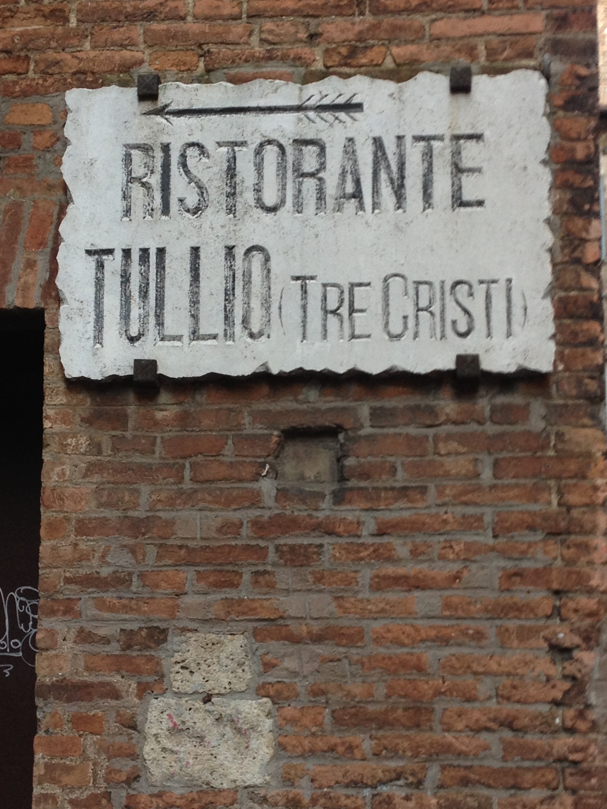
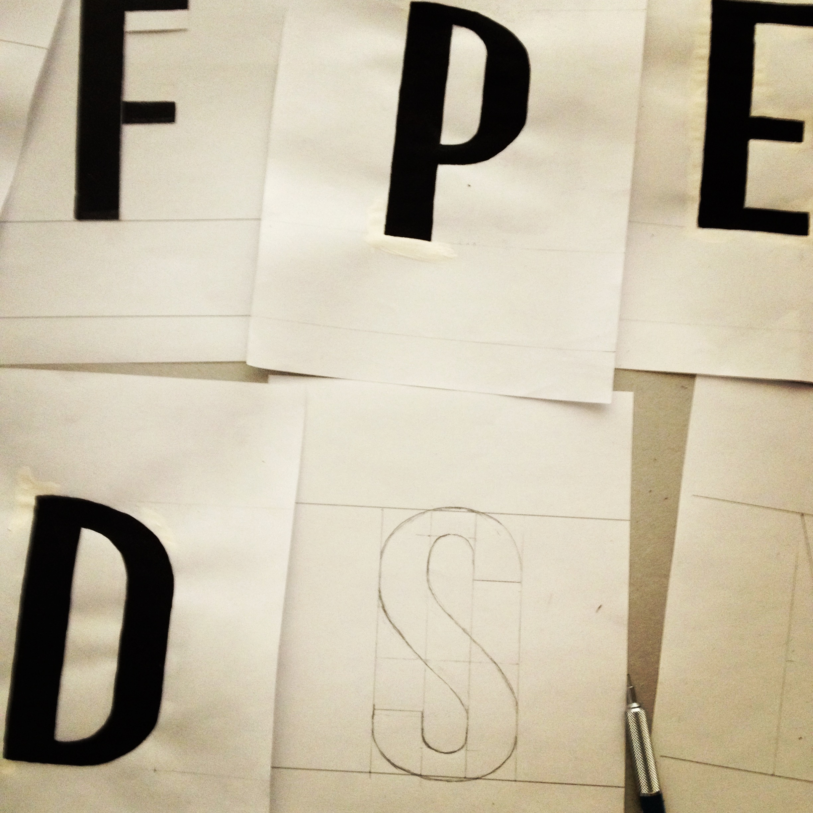
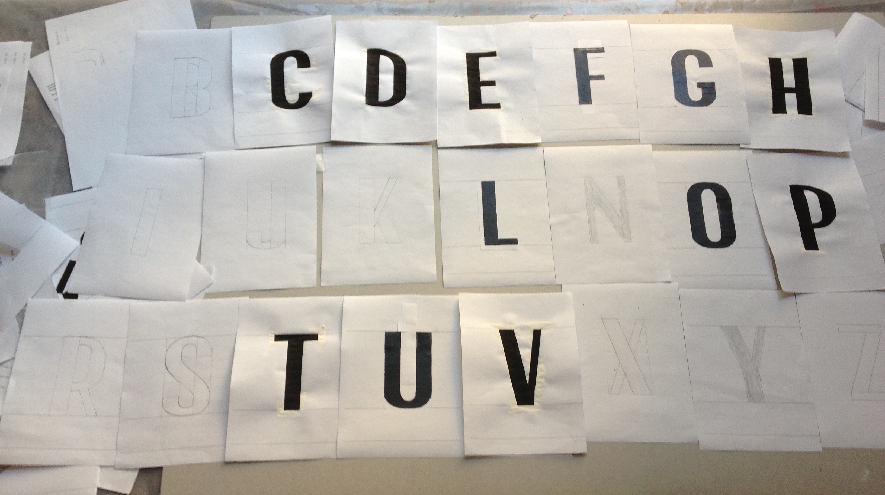

Pranzare
Pranzare is an uppercase typeface I made at a two-week workshop at the Siena Art Institute in Italy in June 2013. The assignment was to make an uppercase sans serif typeface that was inspired by the city of Siena. We spent most of the two weeks refining letters with pencil and plaka paint. Pranzare (”to dine” in Italian) was based on store and restaurant signs around Siena.



